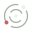

An open field of inquiry
Systems.
Software.
Ideas.
Where structure emerges from uncertainty.
01 / About
Form and possibility.
Negentropic Engines is a home for thinking across systems, software, and ideas.

Negentropic EnginesAn open field of inquiry
Where structure emerges from uncertainty.
Negentropic Engines is a home for thinking across systems, software, and ideas.